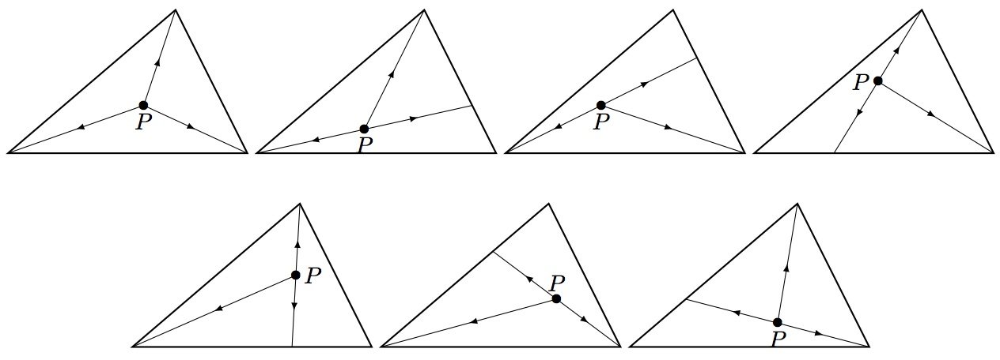

Mamma Triangolo baked a triangular pizza. She wants to cut the pizza into $n$ pieces. She first chooses a point $P$ in the interior (not boundary) of the triangle pizza, and then performs $n$ cuts, which all start from $P$ and extend straight to the boundary of the pizza so that the $n$ pieces are all triangles and all have the same area.
Let $\psi(n)$ be the number of different ways for Mamma Triangolo to cut the pizza, subject to the constraints.
For example, $\psi(3)=7$.

Also $\psi(6)=34$, and $\psi(10)=90$.
Let $\Psi(m)=\displaystyle\sum_{n=3}^m \psi(n)$. You are given $\Psi(10)=345$ and $\Psi(1000)=172166601$.
Find $\Psi(10^8)$. Give your answer modulo $1\,000\,000\,007$.
solve(max_limit=10) → ?solve(max_limit=100000000) → ?